Graph Based Fraud Detection:
Leveraging Temporal Connection Intensity
Department of Statistics, Jeonbuk National University
Contents
Introduction
Related studies
Data Description
Proposed method
Experimet & Results
Conclusion & Discussions
Introduction
Introduction
In this study, complex interactions between observations (e.g., observations with short time intervals, close spatial proximity, or similar patterns) are modeled as graph signals.
A new methodology that embeds graph signals using GCN and combines them with traditional Euclidean methods like XGBoost, CatBoost.
Introduction
Assumptions in Existing Studies for Identifying Credit Card Fraud Transactions:
Large transactions made at specific merchants at specific times.
Consideration of merchants and transaction amounts rather than individual customer’s fraudulent transactions.
In summary, each transaction is analyzed independently to detect fraudulent activity.
Introduction
This study begins with the idea of what could be analyzed about fraudulent transactions if each transaction is not independent.
Keeping in mind the dependencies of each transaction, the study aims to identify fraudulent transactions through their connections.
Introduction
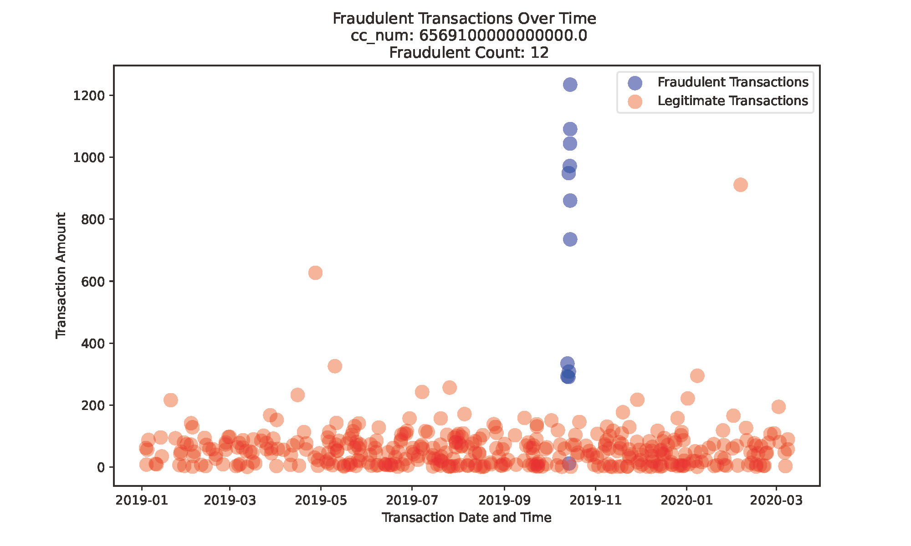Figure 1: The graph displays the timeline of fraudulent transactions for credit card number 65691e+11, associated with Steven Johnson.
Introduction
Existing anomaly detection techniques largely rely on analyzing the amount.
| Type | Avg Amount | Avg Amount (Legitimate) | Avg Amount (Fraudulent) |
|---|---|---|---|
| A | 88 | 88 | 122 |
| B | 179862 | 178187 | 1467967 |
| C | 70.28 | 67.63 | 530.57 |
Introduction
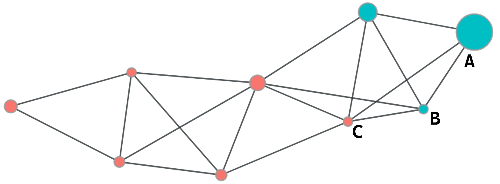Figure 2: This graph represents transactions linked to credit card number 4.42608e+18. Blue nodes indicate fraudulent transactions, and red nodes represent legitimate ones. Node size reflects the transaction amount, and edges connect nodes with closely timed transactions.
Related Studies
Related Studies
Various machine learning techniques have been studied to handle highly imbalanced data, such as credit card fraud transactions.
Wei et al(Wei et al. 2013). proposed an online fraud detection system that demonstrated efficiency in handling large, imbalanced datasets.
Wheeler (2000)(Wheeler and Aitken 2000) used case-based reasoning to reduce final-stage fraud investigations in the credit approval process by developing adaptive solutions for fraud filtering and case prioritization.
Related Studies
Srivastava (2008)(Srivastava et al. 2008) used Hidden Markov Models to train on normal cardholder behaviors and considered a transaction fraudulent if it was not accepted with high probability.
Sanchez (2009)(Sánchez et al. 2009) used association rules to identify normal behavior patterns and detect fraud in anomalous transactions.
Related Studies
Research on fraud detection techniques based on graphs, such as GCN(Kipf and Welling 2016), GAT(Veličković et al. 2017), and GraphSage(Hamilton, Ying, and Leskovec 2017)
Dou and Liu (2018)(Dou et al. 2020) researched Levy-based similarity measurements using GNNs to counteract fraudsters’ disguising behaviors and employed reinforcement learning to determine the optimal number of neighbors.
Related Studies
- Van analyzed credit card fraud detection techniques using network-based expansions, utilizing bipartite and tripartite graphs(Van Vlasselaer et al. 2015).
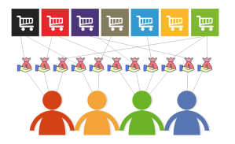
Data description
Data description
Fraud transaction data can be obtained from financial exchange sites such as banks.
Transaction data is anonymized to protect customer privacy.
The analysis is conducted using data provided by Kaggle.
Data description
Credit card transaction records of European cardholders
Data from 693 merchants and 943 individual cardholders
Consists of 1,048,575 rows (transactions) and 22 columns (variables)
6,006 fraudulent transaction data, with a fraud transaction rate of 0.00573.
Data description
Only a selective subset of the 22 variables, deemed most relevant to the analysis objectives, will be utilized.
merchant information can be identified through the category
- Exclude the merchant variable and the distance to merchant variable
Exclude variables not reasonable for fraud transaction prediction
Customer’s distance variable
Customer’s name and date of birth
Data description
| Variable | Description |
|---|---|
| trans.date.and.time | Trading Hours |
| amt | Transaction amount |
| category | Types of transaction stores |
| gender | Gender of the customer |
| job | Job of the customer |
| is_fraud | Indicate whether the transaction is fraudulent(0: legitimate, 1: fraudulent) |
Data description
An example the data used in this study for fitting models to graphs.
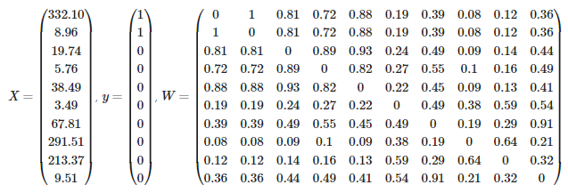
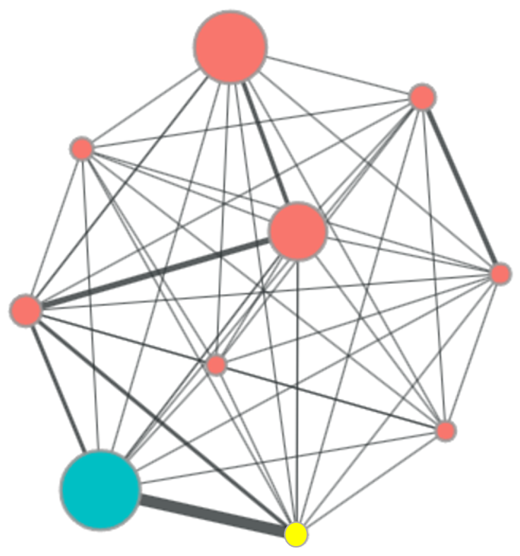
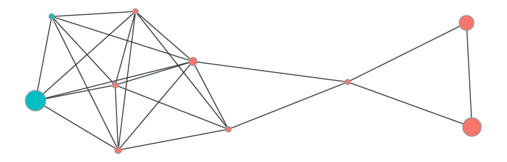
Proposed method
General Methodology
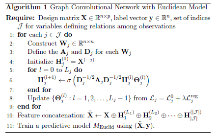Algorithm: Graph Convolutional Network with Euclidean Model
General Methodology
\({\bf X}\): matrix with \((n \times p)\), \({\bf y}\): vector of length n
\(\mathbf{y}\) contains labels indicating fraud presence, while \(\mathbf{X}\) represents the design matrix for predicting \(\mathbf{y}\).
Some columns of \({\bf X}\) define relationships between observations
Denote these variables as \(\{{\bf x}_j : j \in {\cal J}\}\).
\({\cal J}\) is the index set for variables defining relationships
\({\bf W}_j\): Relationship matrix between observations from \({\bf x}_j\)
\({\bf W}_j\): matrix with \((n \times n)\)
Goal: Predict \({\bf y}\) using both \({\bf X}\) and \(\{{\bf W}_j, j \in {\cal J}\}\)
\({\bf W}_j\) dimension grows with \({\bf 𝑛}\), so reduce \({\bf W}_j\) appropriately
Use hidden layer \({\bf H}_j^{(L_j)}\) from the graph convolution unit
Graph convolution
Equation: \({\bf H}_j^{(l+1)} = \sigma\big({\bf D}_j^{-1/2}{\bf A}_j{\bf D}_j^{-1/2}{\bf H}_j^{(l)} {\bf \Theta}_j^{(l)}) \big) \quad \text{for $l=0,1,2,\dots,L_j$}\)
\({\bf A}_j\): Adjacency matrix of \({\bf W}_j\)
\({\bf D}_j\): Degree matrix of \({\bf W}_j\)
\({\bf \Theta}_j^{(l)}\): Learnable parameters
\(\sigma\): Activation function
Utilize GCN to handle the connectivity of observations in credit card fraud detection.Optimize using a loss function similar to (Kipf and Welling 2016).
- Loss function: \[{\cal L}_j = {\cal L}^0_j +\lambda {\cal L}^{\text{reg}}_j\quad {\cal L}^{\text{reg}}_j={\bf o}_j^\top({\bf D}_j-{\bf A}_j) {\bf o}_j\]
Loss function: \[{\cal L}_j = {\cal L}^0_j +\lambda {\cal L}^{\text{reg}}_j\quad {\cal L}^{\text{reg}}_j={\bf o}_j^\top({\bf D}_j-{\bf A}_j) {\bf o}_j\]
\({\bf o}_j\): Output from linearly transforming \({\bf H}_j^{(L_j)}\)
\({\cal L}^0_j\): Supervised loss related to \({\bf y}\)
\({\cal L}^{\text{reg}}_j\): Encourages similarity as relationships increase.
\({\bf H}_j^{(l)}\): Input for layer \(l\).
\({\bf H}_j^{(0)} = {\bf X}^{(-j)}\): Initial layer excluding \({\bf x}_j\)
Use standard linear transform instead of graph convolution for final layer.
This embeds the connection information of observations in the penultimate hidden layer.
Concatenated features: \[\tilde{\bf X}= {\bf X} \oplus {\bf H}_1^{(L_1)} \oplus {\bf H}_2^{(L_2)} \oplus \dots \oplus {\bf H}_{|{\cal J}|}^{(|{\cal J}|)}\]
Train Euclidean model \(M_{\text{Euclid}}\) using \(\tilde{\bf X}\)
Application to Fraud Data
Analyzing \({\tt fraud\_data}\) using the proposed methodology.
Given data: \(({\bf X},{\bf y})\)
Only, \({\tt trans\_data\_and\_time}\) captures the graph structure (\(|{\cal J}|=1\)), referred to as \({\bf x}_{\tt tdt}\)
\({\bf H}^{(0)}\) consists of \({\bf x}_{\tt amt}\) since \({\tt amt}\) is crucial for predicting fraud.
Application to Fraud Data
Consider \({\tt cc\_num}\) to create \({\bf x}_{\tt tdt}\)
Block-matrix structure: \[{\bf W}_{\tt tdt}=\begin{bmatrix} {\bf W}_{{\tt tdt},1} & {\bf 0} & {\bf 0} & \dots & {\bf 0} \\ {\bf 0} & {\bf W}_{{\tt tdt},2} & {\bf 0} & \dots & {\bf 0} \\ {\bf 0} & {\bf 0} & {\bf W}_{{\tt tdt},3} & \dots & {\bf 0} \\ \dots & \dots & \dots & \dots & \dots \\ {\bf 0} & {\bf 0} & {\bf 0} & \dots & {\bf W}_{{\tt tdt},|{\cal I}|} \end{bmatrix}\]
\({\cal I}\) is the set of \({\tt cc\_num}\)
Application to Fraud Data
For fixed \(i \in {\cal I}, (t,s)\)-th elements of \({\bf W}_{{\tt tdt},i}\): \[\exp \left(\frac{-|t-s|_2^2}{\theta} \right) \ \ \ \text{where} \ \ \ t,s \in {\cal T}_i\]
\({\cal T}_i\) is the set of transaction times for the \(i\)th customer.
Application to Fraud Data
Graph Convolutional Network Architecture
1×16 GCN Layer: \({\bf H}^{(1)} = \text{ReLU}\left({\bf D}^{-1/2} {\bf A} {\bf D}^{-1/2} {\bf H}^{(0)} {\bf \Theta}^{(0)}\right)\)
16×8 GCN Layer: \({\bf H}^{(2)} = \text{ReLU}\left({\bf D}^{-1/2} {\bf A} {\bf D}^{-1/2} {\bf H}^{(1)} {\bf \Theta}^{(1)}\right)\)
8×1 Linear Layer: \(\text{Sigmoid}\left({\bf H}^{(2)} {\bf \Theta}^{(2)}\right)\)
Application to Fraud Data
\({\bf D}\) and \({\bf A}\): Degree matrix and adjacency matrix for \({\bf W}\).
\({\bf \Theta}^{(0)}\), \({\bf \Theta}^{(1)}\),\({\bf \Theta}^{(2)}\) dimensions: \((1,16), (16,8), (8,1)\).
Linear Layer used for dimension reduction, capturing non-Euclidean information.
Application to Fraud Data
Experiment 5.1: Predict \({\bf y}\) using \({\bf H}^{(2)}\)
Experiment 5.2: Predict \({\bf y}\) using \({\bf X} \oplus {\bf H}^{(2)}\)
Experiment & Results
Experiment
To analyze and compare the experimental results, the following models were utilized:
Proximity-Based Models: KNN(Ramaswamy, Rastogi, and Shim 2000), ROD(Almardeny, Boujnah, and Cleary 2020)
Linear Model-Base: PCA(Shyu et al. 2003)
Ensemble Methods: RandomForest(Liaw, Wiener, et al. 2002), Isolation Forest(Liu, Ting, and Zhou 2008), XGBoost(Chen and Guestrin 2016), LightGBM(Ke et al. 2017), CatBoost(Prokhorenkova et al. 2018)
Neural Network Methods
Experiment
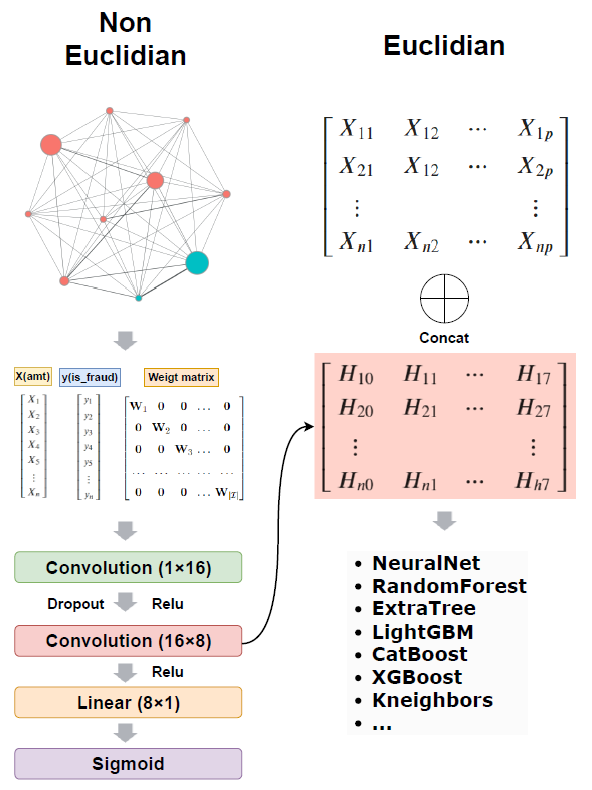
Experiment 1
Data Analysis Using Graph-Based Models
Model: CO-GCN (considers connectivity of \({\tt trans\_and\_date\_time}\)).
Added embedding values using graph information to amt variable.
Experiment 1
| Method | Accuracy | Precision | Recall | F1-score | AUC |
|---|---|---|---|---|---|
| CO-GCN | 0.994669 | 0.594801 | 0.215991 | 0.316904 | 0.985420 |
| NeuralNet | 0.998351 | 0.921711 | 0.777902 | 0.843722 | 0.997630 |
| RandomForest | 0.997302 | 0.823810 | 0.672405 | 0.740447 | 0.980178 |
| ExtraTrees | 0.997718 | 0.914009 | 0.675181 | 0.772064 | 0.981392 |
| LightGBM | 0.996499 | 0.824149 | 0.576481 | 0.680019 | 0.991976 |
| CatBoost | 0.997111 | 0.843077 | 0.608551 | 0.706869 | 0.974223 |
| XGBoost | 0.996748 | 0.812098 | 0.564132 | 0.661540 | 0.945512 |
| KNeighbors | 0.994015 | 0.404206 | 0.096058 | 0.155227 | 0.631168 |
Experiment 1
CO-GCN achieved an AUC of 0.985, indicating superior or similar performance compared to Euclidean models with explanatory variables \({\tt amt, trans\_date\_and\_time, category, gender, job}\).
Confirms GCN model’s effectiveness by considering temporal connectivity.
Experiment 2
Enhancing the Performance of Euclidean Models Using Non-Euclidean Graph Information
Enhance performance of Euclidean models using non-Euclidean graph information.
Analyze independent customer transactions using graph information.
Use a weight matrix based on transaction times for each customer.
Probabilities learned from GCN are used as new features in \({\bf X}\)
Experiment 2 example
| Method | Accuracy | Precision | Recall | F1-score | AUC |
|---|---|---|---|---|---|
| NeuralNet | 0.998351 | 0.921711 | 0.777902 | 0.843722 | 0.997630 |
| NeuralNet_G | 0.998334 | 0.924764 | 0.866741 | 0.894818 | 0.999656 |
| RandomForest | 0.997302 | 0.823810 | 0.672405 | 0.740447 | 0.980178 |
| RandomForest_G | 0.996649 | 0.942949 | 0.816769 | 0.875335 | 0.999124 |
| ExtraTrees | 0.997718 | 0.914009 | 0.675181 | 0.772064 | 0.981392 |
| ExtraTrees_G | 0.998379 | 0.951084 | 0.755692 | 0.842203 | 0.997328 |
| LightGBM | 0.996499 | 0.824149 | 0.576481 | 0.680019 | 0.991976 |
| LightGBM_G | 0.998862 | 0.914418 | 0.889354 | 0.901088 | 0.999706 |
Experiment 2 example
| Method | Accuracy | Precision | Recall | F1-score | AUC |
|---|---|---|---|---|---|
| CatBoost | 0.997111 | 0.843077 | 0.608551 | 0.706869 | 0.974223 |
| CatBoost_G | 0.999071 | 0.920835 | 0.742921 | 0.815109 | 0.994701 |
| XGBoost | 0.996748 | 0.812098 | 0.564132 | 0.661540 | 0.945512 |
| XGBoost_G | 0.998656 | 0.914561 | 0.830796 | 0.877852 | 0.999132 |
| KNeighbors | 0.994015 | 0.404206 | 0.096058 | 0.155227 | 0.631168 |
| KNeighbors_G | 0.994558 | 0.690987 | 0.083935 | 0.158309 | 0.634899 |
Experiment 2
No significant difference in AUC values between existing methods and those including graph information probabilities.
Models were already well-trained with explanatory variables.
Significant difference in probability values for small transaction amounts.
Experiment 2
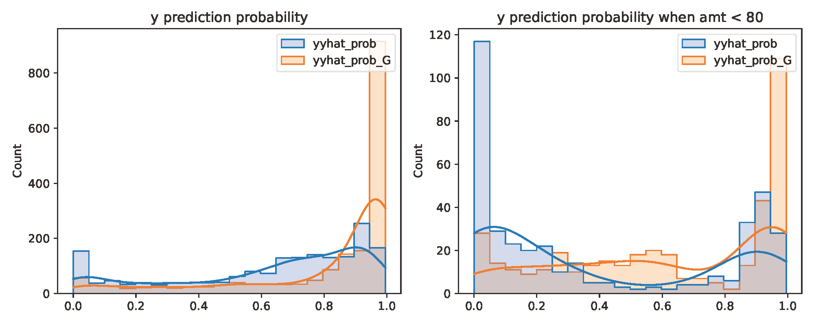Figure 8: Comparison of y prediction probabilities using two different modeling approaches. The blue line represents the model predictions using explanatory variables X, while the orange line incorporates additional graph information values into the X variables. Both figures display the probability of y=1. The left figure shows the prediction probabilities for all amounts, whereas the right figure is specific to cases where amt less than 80.
Experiment 2 - example

Additinal Experiments
To analyze the impact of varying the shape of train data while maintaining the test data shape
Original data fraud transaction ratio of 0.00573 is maintained.
Data split into train and test sets in a 7:3 ratio.
Test data shape remains constant.
Train data shape is varied for analysis.
Additinal Experiments
| Category | shape | Fraud Transaction Ratio |
|---|---|---|
| train1 | (734003, 22) | 0.00573 |
| train2 | (84100, 22) | 0.05 |
| train3 | (42050, 22) | 0.1 |
| train4 | (21025, 22) | 0.2 |
| train5 | (14017, 22) | 0.3 |
| train6 | (10512, 22) | 0.4 |
| train7 | (8410, 22) | 0.5 |
| test | (314572, 22) | 0.00573 |
Additinal Experiments
To compare fraud probability for transactions with amounts less than 80 using undersampled train data.
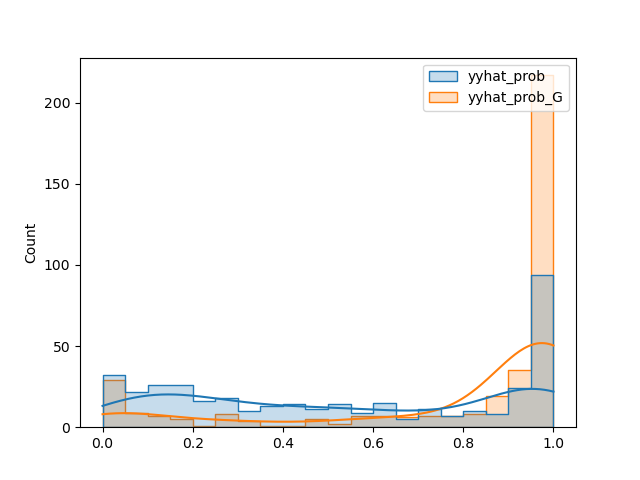
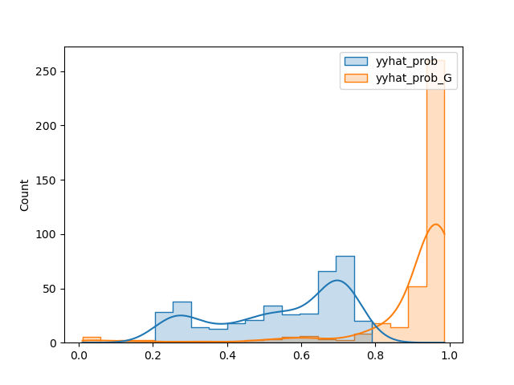
Additinal Experiments
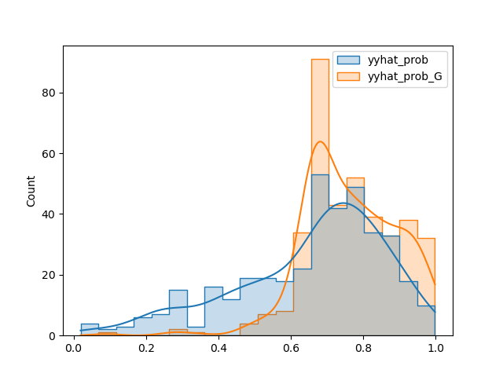
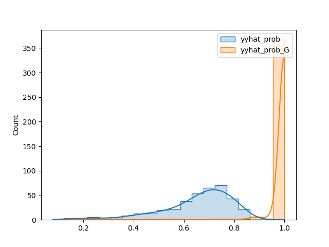

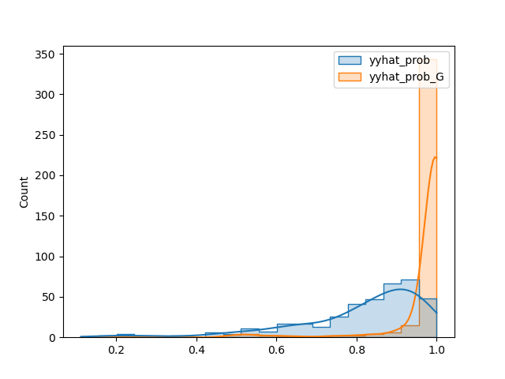
Additinal Experiments
Adding graph information to explanatory variables demonstrates superior performance.
This approach shows significant effectiveness even when applied to traditional undersampling methods for analyzing imbalanced data.
Additinal Experiments using Classic outlier detection
Classic outlier detection techniques are compared and analyzed with and without GCN information.
Classic outlier detection techniques require numerical input, so only the \({\tt amt}\) column is used.
Experimental data is based on train1 data.
Additinal Experiments using Classic outlier detection
| Method | Accuracy | Precision | Recall | F1-score | AUC |
|---|---|---|---|---|---|
| IForest | 0.992832 | 0.373889 | 0.373682 | 0.373786 | 0.683660 |
| IForest_G | 0.994313 | 0.503290 | 0.509717 | 0.506483 | 0.753410 |
| KNN | 0.992149 | 0.309185 | 0.300944 | 0.305009 | 0.648537 |
| KNN_G | 0.994129 | 0.487251 | 0.488063 | 0.487657 | 0.742553 |
| PCA | 0.992835 | 0.374931 | 0.377013 | 0.375969 | 0.686697 |
| PCA_G | 0.993401 | 0.425475 | 0.435869 | 0.430609 | 0.716240 |
| ROD | 0.982551 | 0.000542 | 0.001111 | 0.000729 | 0.494657 |
| ROD_G | 0.99411 | 0.486007 | 0.501389 | 0.493578 | 0.749168 |
Additinal Experiments using Classic outlier detection
Classic outlier detection techniques showed lower performance compared to the latest boosting models.
In Experiment 2, multiple explanatory variables were used, while in this experiment, only amt was used due to Classic outlier detection’s requirement for numerical inputs.
Latest boosting models achieved better performance through hyperparameter tuning.
Despite this, incorporating graph information into Classic outlier detection models resulted in a general increase in AUC values.
Conclusion
Conclusion
Each customer was analyzed as an individual graph structure using GCN models. By utilizing the connectivity of observed values in graph-based research methods, intuitive understanding of transactions was enhanced. For example, if transactions at 11:00 and 11:30 are fraudulent, a transaction at 11:15 is likely also fraudulent, regardless of the amount.
Non-Euclidean models incorporating graph information (XGBoost, LightGBM, CatBoost, etc.) showed superior performance compared to traditional methods. This approach reduced dependency on transaction amounts and made it easier to detect fraud in small transactions.
Conclusion
- The proposed method can be applied not only to fraud transaction data but also to data with complex interactions of observed values, such as traffic data or Wikipedia citations.